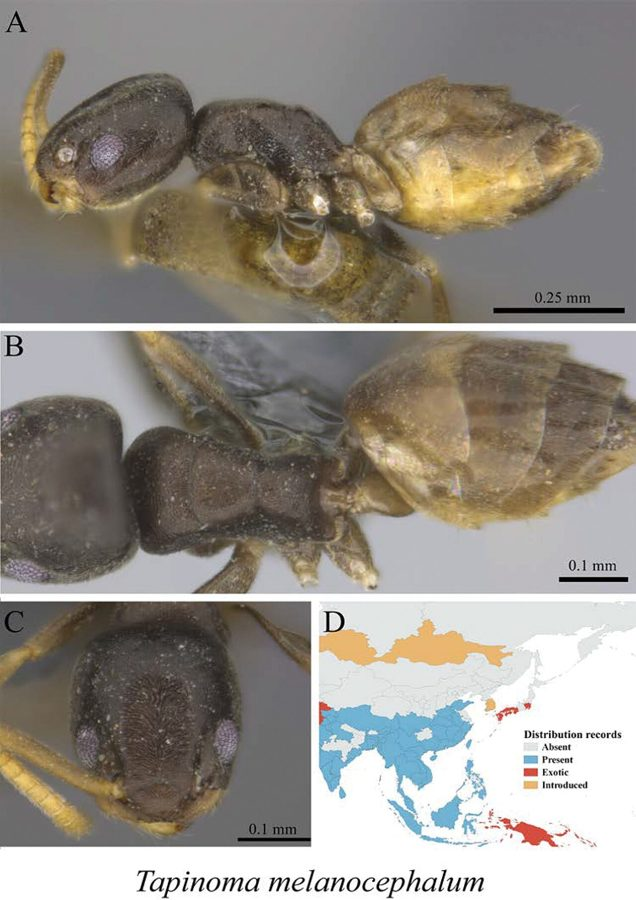

घोस्ट ऐंटGhost Ant
Tapinoma melanocephalum · Formicidae · INS-0253

- Scientific name वैज्ञानिक नाम
- Tapinoma melanocephalum (Fabricius, 1793)
- Family कुल
- Formicidae
- Hindi हिंदी
- घोस्ट ऐंट
- Local names स्थानीय नाम
- ghost ant, bhoot cheenti, tapinoma melanocephalum, tiny pale ant, safed pair cheenti
- Status here यहाँ की स्थिति
- native
- Movement आवागमन
- Resident, here all year
- Known from कहाँ दर्ज
- Others have published records from the wider Awadh–Purvanchal plain, none yet from Basti–Ayodhya अवध–पूर्वांचल से दूसरों के प्रकाशित अभिलेख, बस्ती–अयोध्या से अभी नहीं
- IUCN IUCN
- not evaluated
- Review समीक्षा
- not yet reviewed
When to look कब देखें
Present all year. साल भर मौजूद।
घोस्ट ऐंट / Ghost Ant
Tapinoma melanocephalum (Fabricius, 1793) — Formicidae
घोस्ट ऐंट — घरों के बर्तनों, रसोई के डिब्बों और बागीचों में तेजी से दौड़ने वाली एक अत्यंत सूक्ष्म चींटी। इसका सिर और सीना गहरा भूरा या काला होता है, जबकि पेट और पैर पारदर्शी दूधिया-सफेद होते हैं। दूर से देखने पर केवल इसका नन्हा काला सिर ही चलता दिखाई देता है, इसलिए इसे "भूतिया चींटी" (घोस्ट ऐंट) कहा जाता है।
Quick Identification त्वरित पहचान
| Feature | Description |
|---|---|
| Habit | Minute, highly erratic fast-running tramp ant nesting in opportunist crevices |
| Bicoloured Body | Dark brown to blackish head and thorax sharply contrasting with pale gaster |
| Translucent Gaster | Abdomen and legs pale milky-whitish to yellowish, almost transparent |
| Erratic Gait | Runs in sudden zig-zag bursts without following rigid marching lines |
| Odour | Releases a faint sweet coconut-like chemical odour when crushed |
Field tip: Look around sweet food drops or kitchen sinks for minute specks where only tiny dark dots seem to be running rapidly, their pale bodies disappearing against light backgrounds.
हिंदी — कैसे पहचानें: बेहद छोटा आकार, काला सिर और पारदर्शी सफेद पेट, और छूने पर बहुत तेजी से टेढ़े-मेढ़े भागना।
Morphology आकारिकी
Adult description: Minute, monomorphic dolichoderine ant. Head slightly longer than broad, sides rounded, posterior margin shallowly emarginate; antennae 12-segmented, scape long, extending well beyond the posterior margin of head. Mandibles triangular, masticatory margin with multiple fine teeth. Thorax low, seen in profile without dorsal spines; metanotum slightly depressed. Petiole small, scale-like, strongly inclined forward, concealed beneath the anterior overhanging face of the gaster. Gaster oval, smooth, without a sting. Coloration strikingly distinct: head and alitrunk dark blackish-brown to pitch-black; petiole, gaster, antennae, and legs pale milky-white to yellowish-translucent.
हिंदी: यह एक अत्यंत छोटी चींटी है जिसका सिर काला और बाकी शरीर पारदर्शी सफेद होता है।
Behaviour & Ecology व्यवहार और पारिस्थितिकी
- Polygynous Colonies: Super-colonies contain numerous functional queens and multiple interconnected nesting chambers.
- Budding Dispersal: New colonies form primarily by budding, with queens and workers moving to nearby crevices rather than relying on high nuptial flights.
- Erratic Running: Foragers run in rapid, frantic zig-zag patterns, dispersing quickly in all directions when startled.
- Honeydew Tending: Extensively herds phloem-feeding insects on garden plants, fiercely defending them from ladybird predators.
हिंदी: एक ही कॉलोनी में कई रानियां होती हैं। यह बहुत तेजी से टेढ़े-मेढ़े रास्तों पर दौड़ती है और माहू (एफिड्स) से मीठा रस लेती है।
Life Cycle / Phenology जीवन चक्र
- Rapid Development: Eggs hatch into tiny legless white larvae that mature into pupae without spinning cocoons.
- Continuous Brood Production: Inside heated homes and warm tropical environments, colonies breed continuously throughout the twelve months of the year.
- Mobility: Entire nests with brood and queens can relocate within minutes if disturbed or if moisture levels fluctuate.
- High Longevity: Multi-queen structure makes colonies practically immortal and extremely difficult to eradicate once established.
हिंदी: यह पूरे साल अंडे देती है। खतरा होने पर यह कुछ ही मिनटों में अपने अंडों-बच्चों को उठाकर दूसरी जगह चली जाती है।
Host Plants or Prey आहार
- Household Sweets: Sugar grains, syrup drips, spilled tea, honey, and bread crumbs in kitchens.
- Honeydew: Sweet liquid excreted by mealybugs and soft scales on mango, guava, and peepal.
- Dead Arthropods: Scavenges dead flies, mosquitoes, and small spider carcasses.
हिंदी: यह रसोई में चीनी, गुड़ और गिरी हुई मिठाइयों को बहुत तेजी से चट करती है। यह मरे हुए कीड़ों को भी खाती है।
Predators / Natural Enemies शत्रु
- Lizards: House geckos and small skinks feed on ghost ant trails on kitchen walls.
- Spiders: Tiny jumping spiders (Salticidae) ambush isolated foraging workers.
- Ant Competitors: Larger ants like Camponotus and Monomorium compete aggressively for sugary resources.
हिंदी: घरेलू छिपकलियां और नन्हीं मकड़ियां इन्हें खाती हैं। बड़ी चींटियां इनके भोजन को छीन लेती हैं।
Agricultural / Human Relevance कृषि प्रासंगिकता
- Domestic Nuisance Pest: Extremely persistent kitchen pest across Awadh, invading airtight containers, sugar jars, and microwave seams.
- Agricultural Impact: Protects homopteran sap-sucking pests like mealybugs on fruit trees, occasionally aggravating plant infestations.
- No Stinging Risk: Lacks a functional venomous sting; completely harmless to human skin despite its annoying foraging numbers.
हिंदी: यह रसोई में चीनी के डिब्बों में घुसने वाली सबसे आम चींटी है। यह काटती नहीं है और इसका कोई डंक नहीं होता।
Expected Locally स्थानीय रूप से अपेक्षित
Not a field record. Written from published accounts for eastern Uttar Pradesh. No confirmed local sighting yet — if you have seen it, that is what the atlas needs.
अभी तक स्थानीय पुष्टि नहीं। यह विवरण प्रकाशित स्रोतों से है, किसी अवलोकन से नहीं।
Expected across rural settlements, agricultural groves, gardens, and scrublands of Basti, Ayodhya, and neighbouring Awadh districts. GBIF holds published records from the wider Awadh–Purvanchal plain, none yet from Basti–Ayodhya. To confirm this species for the Atlas, provide a clear photograph showing key field characters, along with date, time, and specific location.
Distribution वितरण
Global range: A pantropical tramp species native probably to the Indo-Malayan or Afrotropical realm, now distributed worldwide across warm regions.
In India: Abundant and ubiquitous across every state and union territory from sea level to the Himalayas.
In Uttar Pradesh: Documented from urban and rural households in Lucknow, Gorakhpur, Varanasi, and Ayodhya.
In Basti district / eastern UP: Ubiquitous in kitchens, tea stalls, grocery shops, and orchard soil throughout Basti and surrounding areas.
हिंदी: यह चींटी पूरी दुनिया के गर्म देशों में पाई जाती है। उत्तर प्रदेश के हर घर और गांव की रसोई में यह मौजूद है।
Research Questions शोध प्रश्न
- What dietary attractants (proteins vs sugars) yield the fastest trail formation in Awadh households? / अवध के घरों में चीनी या प्रोटीन में से कौन सी चीज इस चींटी को सबसे तेजी से आकर्षित करती है?
- How does nest relocation speed vary when exposed to dry heat versus flooding? / तेज धूप या पानी भरने पर यह चींटी कितनी तेजी से अपना घोंसला बदलती है?
- What is the density of queens per nest unit in rural thatched kitchens? / ग्रामीण छप्पर वाली रसोइयों में इसके एक घोंसले में औसतन कितनी रानियां होती हैं?
- How do local jumping spiders exploit the erratic movement of ghost ants for predation? / कूदने वाली मकड़ियां इस चींटी की टेढ़ी-मेढ़ी चाल का फायदा उठाकर इसे कैसे पकड़ती हैं?
- Does mutualistic tending of mealybugs by ghost ants cause significant yield loss in guava orchards? / क्या अमरूदों में मिलीबग को पालने से यह चींटी बागवानों का नुकसान करती है?
Similar Species मिलती-जुलती प्रजातियाँ
| Species | How to tell apart | हिंदी |
|---|---|---|
| Tapinoma indicum | Body uniformly brown; lacks the pale translucent gaster and legs | पूरा शरीर भूरा, पेट और पैर पारदर्शी नहीं |
| Monomorium pharaonis | Uniformly amber-yellow body with a distinct two-segmented petiole | शरीर बादामी पीला, कमर में दो मनके |
| Brachymyrmex patagonicus | Completely pale yellowish-brown; moves in steady lines rather than erratic bursts | एकसमान हल्का भूरा शरीर, सीधी कतार में चलना |
Field rule: A minute ant with a dark blackish head and almost transparent milky-white gaster running frantically over kitchen surfaces identifies Tapinoma melanocephalum.
Taxonomy & Classification वर्गीकरण
Original description. Described by Johan Christian Fabricius in 1793 as Formica melanocephala in Entomologia Systematica Emendata et Aucta, Tomus II, Hafniae.
Subspecies. Monotypic across the tropics; placed in the subfamily Dolichoderinae.
Family and order placement. Belongs to the family Formicidae, subfamily Dolichoderinae, in the order Hymenoptera.
IUCN status rationale. Not evaluated by the IUCN; abundant, cosmopolitan tramp species thriving in human environments.
हिंदी: फैब्रिकियस ने 1793 में इसका वैज्ञानिक विवरण दिया था। यह फॉर्मिसिडी कुल के डोलिकॉडेरिनाई उपकुल की चींटी है।
Photo Gallery फोटो गैलरी
No photos yet — add field photos to media/species/ghost_ant/ and run node scripts/sync_photos.js.
Photos needed आवश्यक फोटो
- [ ] High-magnification shot showing dark head and translucent white gaster (काले सिर और सफेद पेट का क्लोज-अप)
- [ ] Swarm of workers feeding on a spilled sugar drop (चीनी की बूंद पर इकट्ठा चींटियों का समूह)
- [ ] Queens and workers moving brood inside a wall crevice (दीवार के छेद में बच्चों को ले जाती चींटियां)
References संदर्भ
- Fabricius, J.C. (1793). Entomologia Systematica Emendata et Aucta, Tomus II, Hafniae.
- Bingham, C.T. (1903). The Fauna of British India, including Ceylon and Burma: Hymenoptera, Vol. II. Ants and Cuckoo-wasps, p. 304. Taylor and Francis, London.
- Bolton, B. (1995). A New General Catalogue of the Ants of the World. Harvard University Press, Cambridge.
- Wilson, E.O. (1971). The Insect Societies. Belknap Press of Harvard University Press, Cambridge.
- GBIF Occurrence Data — Tapinoma melanocephalum (Fabricius, 1793), India (2025).
Source file: species/fauna/insects/ghost_ant.md